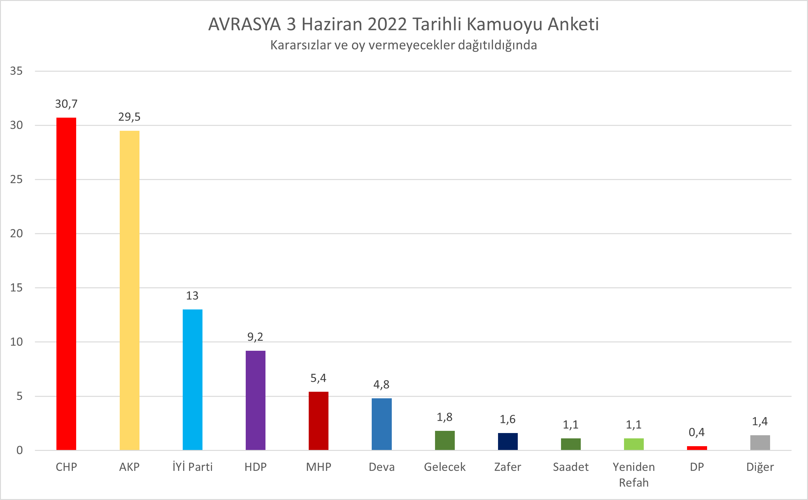

Güncel Anketler
Yöneylem Araştırma'nın 2-4 Haziran tarihleri arasında gerçekleştirdiği Türkiye Siyaset Paneli araştırmasına göre Seçmenlerin Milletvekilliği Seçimi Parti Tercihleri (kararsızlar ve oy kullanmayacaklar oransal olarak dağıtıldığında) pic.twitter.com/tVNNDUJqgU
— Yöneylem Sosyal Araştırmalar Merkezi (@YoneylemSosyal) June 6, 2022

Mayıs Ayı araştırmamız
— Kemal ÖZKİRAZ (@avrasyaanket) June 3, 2022
Oy oranları pic.twitter.com/ZzyO7RdcB9
